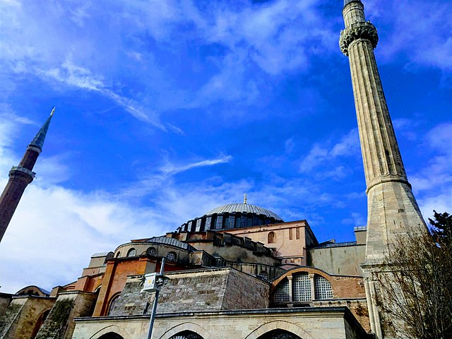
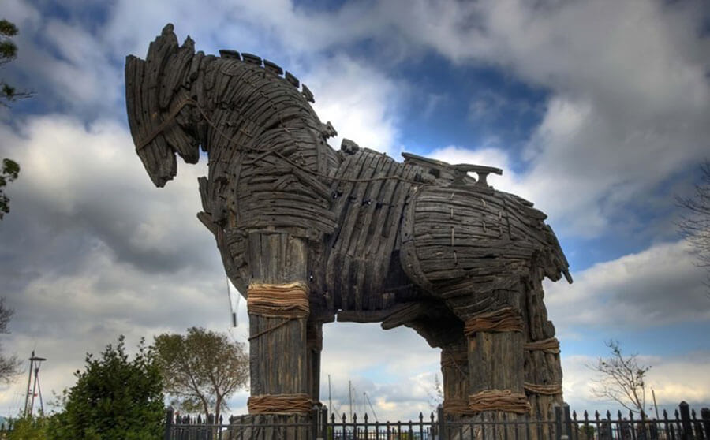

Ayasofya

İstanbul
Bizans
Mimari
Ayasofya, İstanbul'da yer alan tarihi bir yapıdır. Hem kilise hem cami olarak kullanılmıştır.
Efes Antik Kenti

İzmir
Roma
Tarih
Efes, antik dönemin en önemli şehirlerinden biridir ve Artemis Tapınağı ile ünlüdür.
Kapadokya
Nevşehir
Doğa
Peribacaları
Kapadokya, doğal kaya oluşumları ve yer altı şehirleriyle ünlüdür.
Topkapı Sarayı

İstanbul
Osmanlı
Saray
Osmanlı İmparatorluğu'nun yönetim merkezi olan tarihi bir saraydır.
Nemrut Dağı

Adıyaman
Kommagene
Heykel
Dev heykelleriyle ünlü, UNESCO Dünya Mirası Listesi'nde yer alan bir dağdır.
Safranbolu Evleri

Karabük
Osmanlı
Mimari
Osmanlı döneminden kalma korunmuş evleriyle ünlüdür.
Sumela Manastırı

Trabzon
Hristiyanlık
Dağ
Karadeniz'in dağlarına oyulmuş tarihi bir manastırdır.
Truva Antik Kenti

Çanakkale
Mitoloji
Kazı
Homeros'un destanlarında geçen Truva Savaşı'nın yapıldığı yerdir.
Hierapolis & Pamukkale

Denizli
Termal
Roma
Beyaz travertenleri ve antik kentiyle ünlüdür.
Göbekli Tepe

Şanlıurfa
Neolitik
Tarihin Başlangıcı
Dünyanın bilinen en eski tapınağı olarak kabul edilir.
Tarihi Yerler Tablosu
| Şehir | Yerin Adı |
|---|---|
| İstanbul | Ayasofya |
| İzmir | Efes Antik Kenti |
| Nevşehir | Kapadokya |
| İstanbul | Topkapı Sarayı |
| Adıyaman | Nemrut Dağı |